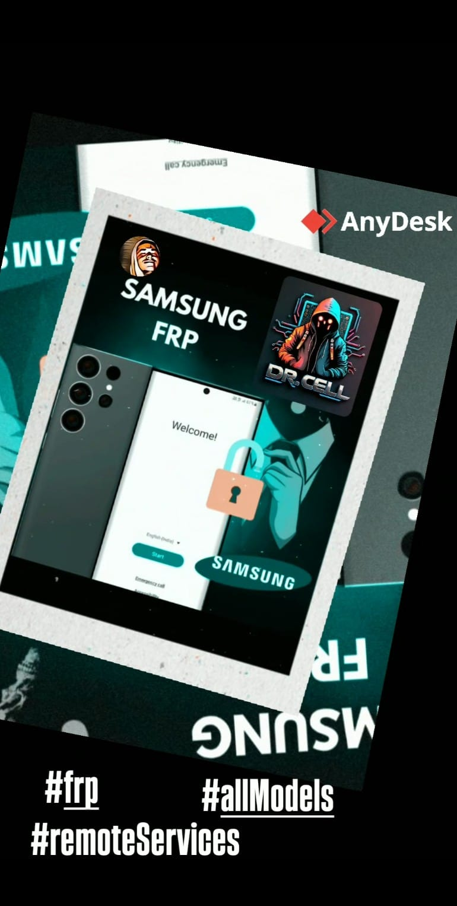

Nuestros Servicios
-
Desbloqueo de F R P - Cuenta Google del dispositivo.
Este servicio está diseñado para eliminar el bloqueo de la cuenta de Google (FRP) en dispositivos Android Samsung. Si has olvidado tus credenciales o has adquirido un dispositivo que requiere la verificación de cuenta, nuestro equipo puede ayudarte. Utilizamos un procedimiento remoto a través de tu PC y un cable USB, facilitando el proceso mediante la aplicación AnyDesk. Esto permite un acceso seguro y eficiente a tu dispositivo, asegurando que puedas restablecer el acceso rápidamente.
 -
Desbloqueo de I M E I
Si tu dispositivo Samsung presenta problemas relacionados con el IMEI, como estar bloqueado por un operador o no poder acceder a redes móviles, ofrecemos un servicio de desbloqueo de IMEI. Este proceso también se realiza de forma remota utilizando AnyDesk, garantizando que tu dispositivo esté listo para usar con cualquier proveedor de servicios.

-
Soporte y Acesoramiento
Nos comprometemos a ofrecer un servicio eficaz y garantizado, asegurando que quedes satisfecho con el resultado.